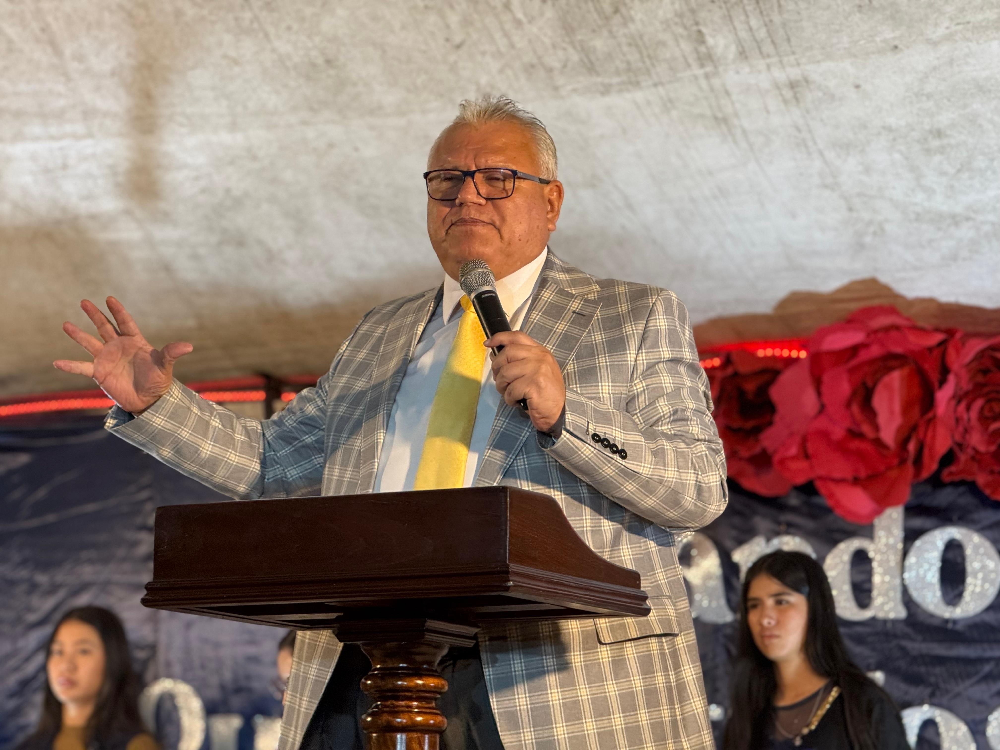

Campamento Juvenil 2026
FORJANDO
VICTORIAS
"Victoria en el obrar de tus manos"
"Victoria en el obrar de tus manos"
Forjando Victorias

"Palabras de nuestro pastor Saul Cancinos (Si la idea le gusto subiría a hablar con pastor para que escriba algo acá)".